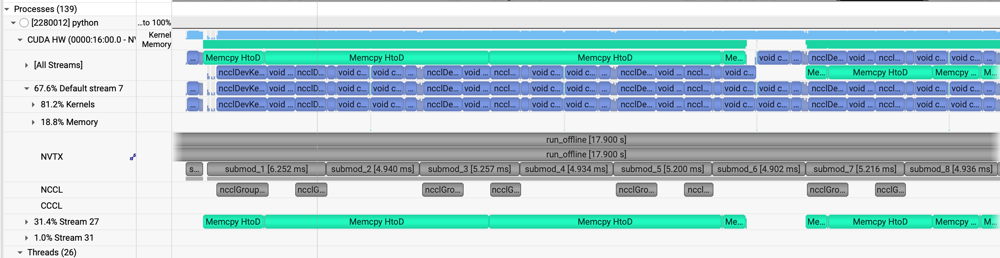
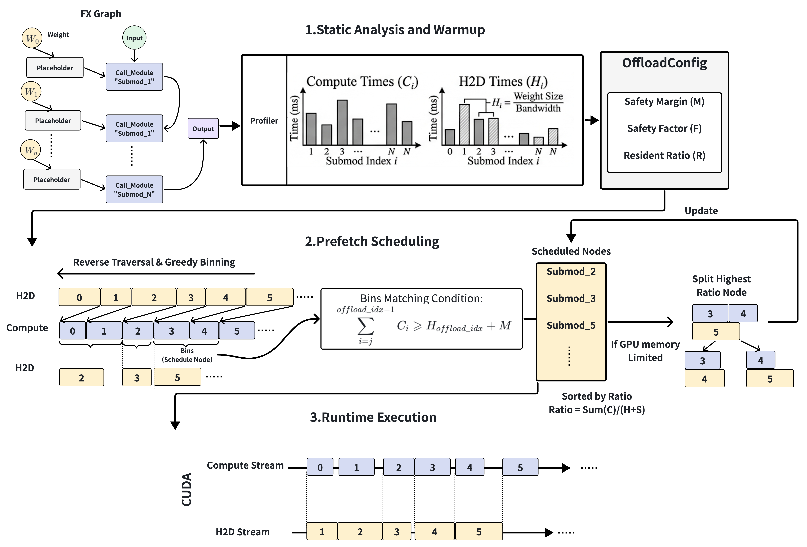

自动 Offloading 解析#
在训练或推理超大模型时，GPU 显存容量是首要瓶颈。业界标准的解决方案是 Offloading——将一部分模型权重转移到 CPU，并在计算前动态地将它们预取（Prefetch）回 GPU。
然而，daVinci-MagiHuman base 256p 这类高计算效率模型的出现，对传统 offload 策略提出了挑战。由于这些模型的算子执行极快，留给 PCIe 数据传输的重叠窗口异常短暂。如果预取不够精准，GPU 会频繁进入等待数据的饥饿状态，从而产生显著的流水线气泡。

{kind=link}

左：基础 Offload，存在明显的 GPU 饥饿（气泡）。右：启发式 Offload，消除了流水线气泡并加速了 daVinci-MagiHuman。
本文深入 MagiCompiler 的核心源码（api.py、offload_wrapper.py 与 scheduler.py），剖析它如何实现计算与传输之间的深度重叠。
架构概览：基于图的异步流水线#
MagiCompiler 的 Offload 机制构建在 torch.fx 图模式之上。其核心逻辑是：在当前子模块仍在计算时，使用一条独立的 CUDA Stream 为后续模块拉取权重。
OffloadExecutor / OffloadWrapper：负责算子图解析、内存生命周期管理与执行流调度。
OffloadScheduler：核心策略层，决定权重的驻留优先级以及预取触发的精确时机。
运行机制：细粒度的执行器控制#
图分析：_analyze_graph 预先遍历 torch.fx.GraphModule，为每个节点计算引用计数（user_counts），为
用完即弃的内存释放提供依据。Profiling：在最初的几次运行中，OffloadProfiler 测量每个子模块的计算时间与 H2D 带宽。预热结束后，_finalize_warmup() 将这些经验数据喂给调度器，生成静态的最优策略。
动态内存管理：异步预取在 call_module 之前触发。执行结束后，立即根据引用计数从环境中清除张量，并借助 record_stream 确保内存只在安全时才被物理释放。
调度策略：面向高速模型的启发式方法（scheduler.py）#
为应对 daVinci-MagiHuman 这类快节奏模型，MagiCompiler 提供了三种逐步演进的调度器：
BaseScheduler：一种基础的前瞻策略，仅提前预取 1–2 个模块。在长序列或快速算子的场景下，这种简单方法往往无法覆盖传输延迟。
CostEffectiveScheduler：该策略纠正了优先照顾长计算算子的直觉误区。它识别出：权重体量巨大但计算极快的模块才是气泡的主要来源。因此，它把有限的 GPU 驻留配额分配给这些传输重、计算轻的模块。
HeuristicScheduler：
{kind=link}

JIT（Just-In-Time）最晚加载：最先进的方案。它利用 profiling 数据反推出传输的精确开始时刻，确保权重在计算前的
最后一刻抵达 GPU。这避免了排队权重造成的内存膨胀，并将峰值内存占用压缩到理论最小值。权重驻留优化：若检测到有剩余 GPU 显存（依据 gpu_resident_weight_ratio），它会指定特定权重常驻 GPU，从而缓解 PCIe 带宽的压力。
性能：RTX 5090 上的零气泡体验#
在 RTX 5090 环境下，采用 CP4 并行策略，使用 daVinci-MagiHuman base 256p 进行 10 秒长视频生成推理测试：
通过将 gpu_resident_weight_ratio 设为 35%，系统把这块黄金GPU 显存分配给大体量、快计算的算子。剩余 65% 的权重则由 HeuristicScheduler 管理，进行精确的 JIT 预取。
结果：这段 10 秒的视频推理过程实现了 H2D 通信与计算的完全重叠。尽管算子吞吐极高，GPU 仍保持满负荷运转、零流水线气泡，同时达到了内存效率与系统吞吐的理论极限。